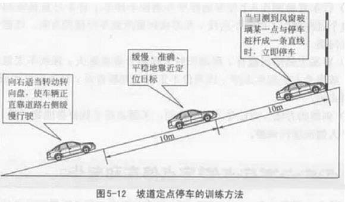
1首先是轻带油门，慢松离合器；
2其次是一旦感觉车子已有向前的动力，就应松手刹，同时略加油门；
3最后是车子一经起步，就慢慢松开离合器。
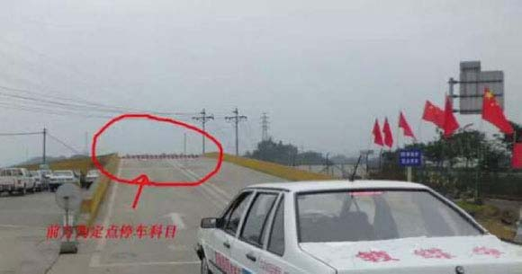
驾车在上坡路定点停车与陡坡起步，可以提高使用档位和离合器的能力，以适应在上坡路段固定地点靠边停稳车辆和等候放行时的操作需要。
考试内容通过视觉和感觉及时判断坡道的陡坦、长短及路宽等道路情况。采取恰当的操作方法，控制车辆平稳停车和起步。做到转向正确，换档迅速，转向盘、制动器、离合器三者配合准确协调。
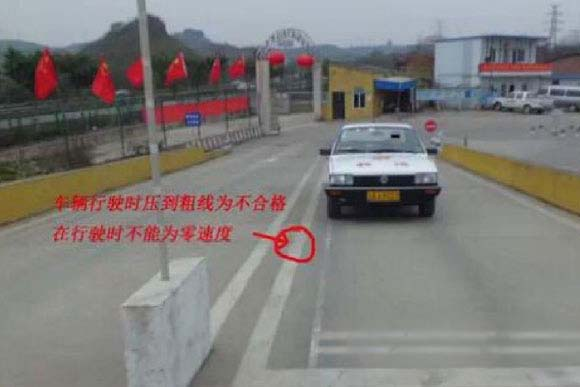
车辆在上坡行驶时，不能压到右边粗线，而且中途不能停车
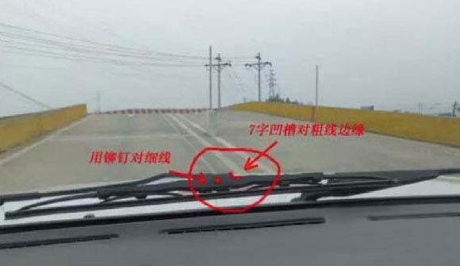
行驶时，用铆钉对细线或用7字凹槽对粗线边缘
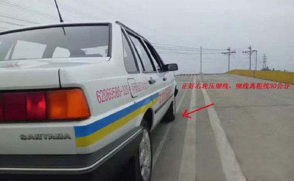
在车下观察，车辆右边轮胎正好压在细线上
（考试停车时，车辆离粗线30公分为合格，细线正好离粗线30公分，所以车轮压在细线上就代表车辆离粗线有30公分了）
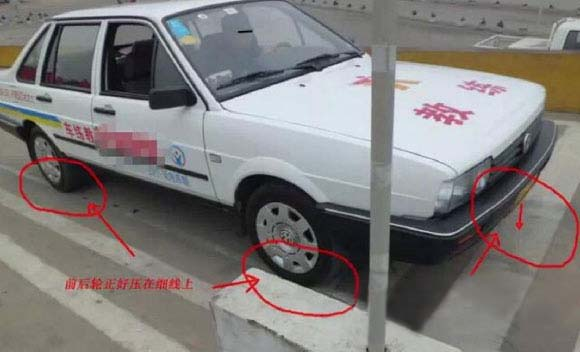
车辆行驶至图上位置时停车，为定点停车合格标准（车辆右边轮胎压在细线上，车牌垂直向下正好在粗线内）
那么，怎么才能停到标准的位置呢？我们还是采用看点停车的方式。
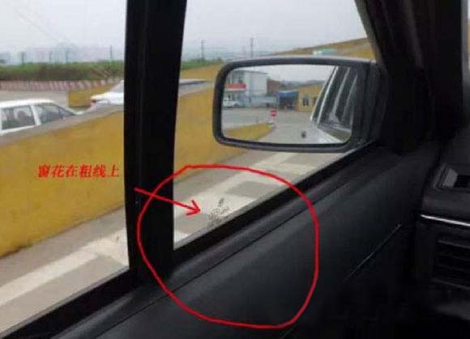
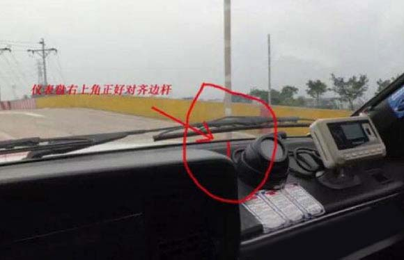
在爬坡的过程中就对好边线的位置，保持车身不动了，主要观察左边的反光镜。当那根白线刚刚过完的时候就踩刹车，这样就是标准位置哦！一般说的看窗花，那个根本就不科学哈，万一考试的时候别个窗花没贴，或者距离不对不是完都完了
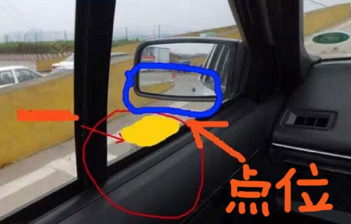
蓝色的是镜子，黄色的就是线，就是我们坐在位置上面，看到刚刚过了点点黄线就停车就很标准了。
车辆在陡坡上行驶时，需要先保证右边轮胎压细线，然后车辆直行，直行到上图所示（两张图两个点）任意选一个点看，到点时停车。
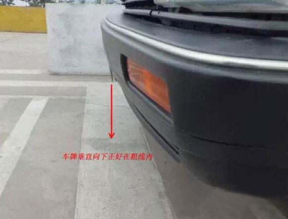
这时，车牌就在粗线内了
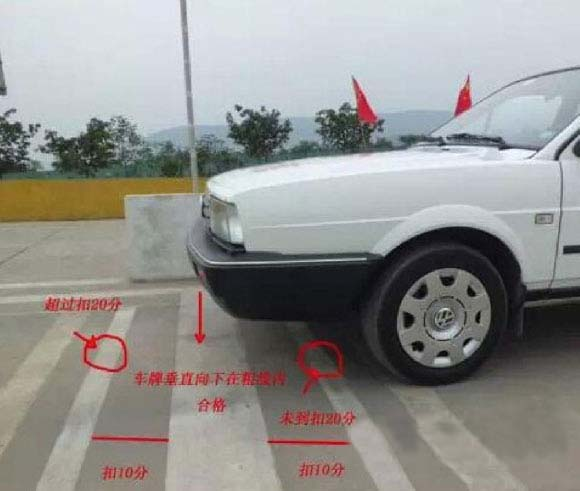
车牌在粗线内为合格，超出或没到粗线扣10分，超出或没到细线扣20分
以上就是陡坡定点停车的方法。
马上紧跟到的就是陡坡起步了，其实把定点停车停好了，可以给自己很多底气，在开始给大家分享的时候，还是再一次强调，打转弯灯
在停好之后，车上的机器会响，一般合格的话，你马上打左边的转弯灯，就是方向盘下方的那个往下拨。
陡坡起步说难不难，说简单也不简单，就是先放离合，慢慢放，用我们教练的话说“一颗米，一颗米的放”，当你感觉车子有点抖了，就可以松刹车了。（这个还是要多练，有时候你觉得车子抖了，但是松了刹车还是往后退，这个就是还没有到点上）。